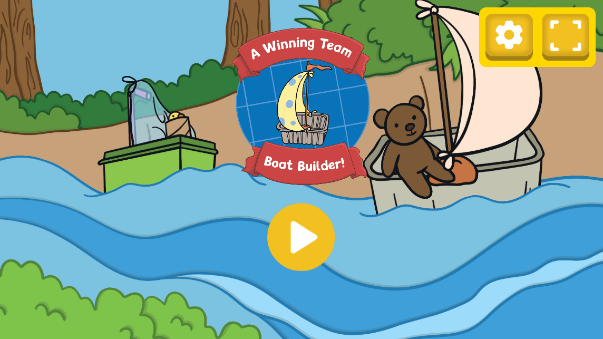

About the Game
A Winning Team: Boat Builder is a creative multiplayer racing game where players assemble boats using junk modeling materials and race to victory! Strategically construct your vessel to ensure it stays afloat while competing against friends or the clock. Each race is a test of speed, balance, and design, encouraging players to rebuild and refine their boats for better performance. Featuring a dynamic water shader, this adds an extra layer of challenge as you navigate toward the finish line!
Play Now: Click here to play
(A Twinkl subscription is required to play.)
Tools Used
Unity (C# for scripting, HLSL for shaders)
Photoshop
Gameplay Preview
Additional Screenshots